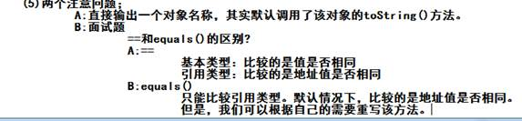
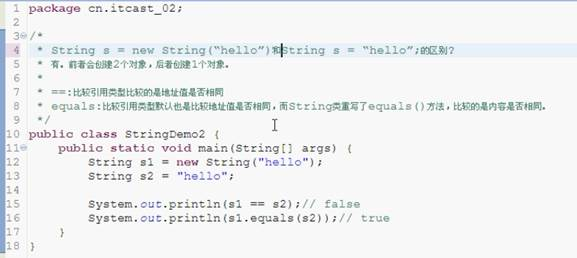
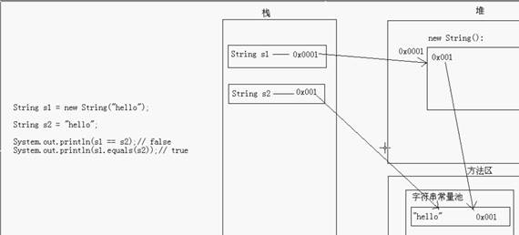
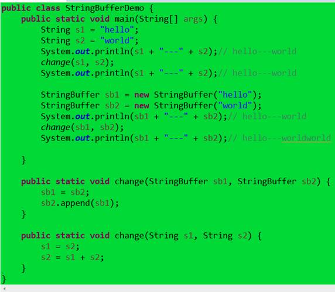
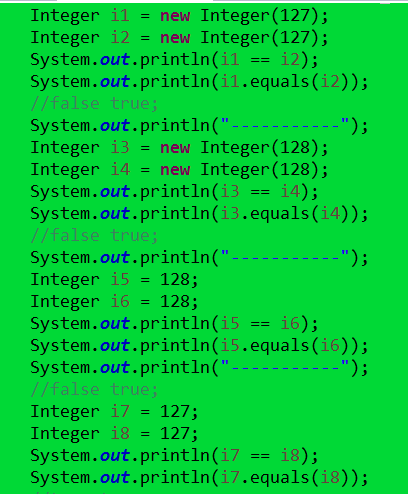
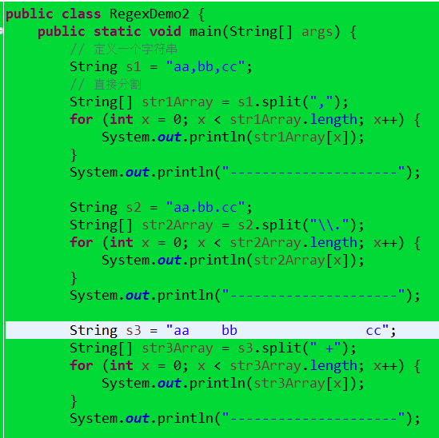
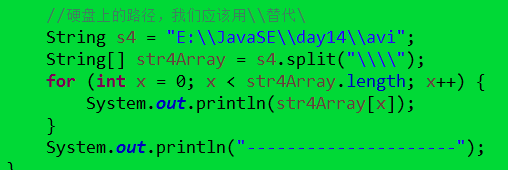
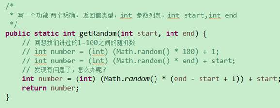
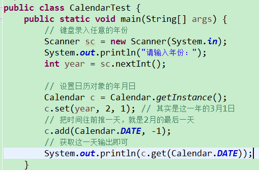

14.29 用Calendar计算某一年有二月天数........................................................................ 7
有个面试题ListedList模拟栈的集合类............................................................................ 9
18.23面试题 HashMap 与Hashtable的区别................................................................... 10

面试题


String 的一个面试题
(3)字符串的特点
A:字符串一旦被赋值，就不能改变。
注意：这里指的是字符串的内容不能改变，而不是引用不能改变。
B:字面值作为字符串对象和通过构造方法创建对象的不同
String s =
new String("hello");和String s =
"hello"的区别?
(4)字符串的面试题(看程序写结果)
A:==和equals()
String s1 =
new String("hello");
String s2 =
new String("hello");
System.out.println(s1
== s2);// false
System.out.println(s1.equals(s2));//
true
String s3 =
new String("hello");
String s4 =
"hello";
System.out.println(s3
== s4);// false
System.out.println(s3.equals(s4));//
true
String s5 =
"hello";
String s6 =
"hello";
System.out.println(s5
== s6);// true
System.out.println(s5.equals(s6));//
true
B:字符串的拼接
String s1 =
"hello";
String s2 =
"world";
String s3 =
"helloworld";
System.out.println(s3
== s1 + s2);// false
System.out.println(s3.equals((s1
+ s2)));// true
System.out.println(s3
== "hello" + "world");// false 这个我们错了，应该是true
System.out.println(s3.equals("hello"
+ "world"));// true
/*
* 面试题：
* 1：String,StringBuffer,StringBuilder的区别?
* A:String是内容不可变的，而StringBuffer,StringBuilder都是内容可变的。
* B:StringBuffer是同步的，数据安全,效率低;StringBuilder是不同步的,数据不安全,效率高
*
* 2：StringBuffer和数组的区别?
* 二者都可以看出是一个容器，装其他的数据。
* 但是呢,StringBuffer的数据最终是一个字符串数据。
* 而数组可以放置多种数据，但必须是同一种数据类型的。
*
* 3:形式参数问题
* String作为参数传递
* StringBuffer作为参数传递
*
* 形式参数：
* 基本类型：形式参数的改变不影响实际参数
* 引用类型：形式参数的改变直接影响实际参数
*
* 注意：
* String作为参数传递，效果和基本类型作为参数传递是一样的。
*/

Sb=sb2 的时候原值不变。但是做append的时候变化
/*
* 看程序写结果
*
* 注意：Integer的数据直接赋值，如果在-128到127之间，会直接从缓冲池里获取数据
*/

//true true
// 通过查看源码，我们就知道了，针对-128到127之间的数据，做了一个数据缓冲池，如果数据是该范围内的，每次并不创建新的空间
// Integer ii
= Integer.valueOf(127);
14.07
正则split 分割的面试题


面试题一道去两个数之间的随机数据

/*
* 获取任意一年的二月有多少天
*
* 分析：
* A:键盘录入任意的年份
* B:设置日历对象的年月日
* 年就是A输入的数据
* 月是2
* 日是1
* C:把时间往前推一天，就是2月的最后一天
* D:获取这一天输出即可
*/
说
(7)List的子类特点(面试题)
ArrayList
底层数据结构是数组，查询快，增删慢。
线程不安全，效率高。
Vector
底层数据结构是数组，查询快，增删慢。
线程安全，效率低。
LinkedList
底层数据结构是链表，查询慢，增删快。
线程不安全，效率高。
到底使用谁呢?看需求?
分析：
要安全吗?
要：Vector(即使要，也不使用这个，后面再说)
不要：ArrayList或者LinkedList
查询多；ArrayList
增删多：LinkedList
什么都不知道，就用ArrayList。
C:用LinkedList模拟一个栈数据结构的集合类，并测试。
你要定义一个集合类，只不过内部可以使用LinkedList来实现。
再代码Day_16list_son
cn.itcast_05里面 是个面试题
总结当中涵盖了许多内容，记住 day17总结.txt
HashMap就是用来替代Hashtable的
/*
* 1:Hashtable和HashMap的区别?
* Hashtable:线程安全，效率低。不允许null键和null值
* HashMap:线程不安全，效率高。允许null键和null值
*
* 2:List,Set,Map等接口是否都继承子Map接口?
* List，Set不是继承自Map接口，它们继承自Collection接口
* Map接口本身就是一个顶层接口
*/
/*
* Collections:是针对集合进行操作的工具类，都是静态方法。
*
* 面试题：
* Collection和Collections的区别?
* Collection:是单列集合的顶层接口，有子接口List和Set。
* Collections:是针对集合操作的工具类，有对集合进行排序和二分查找的方法
测试Demo如下
18.
作业补充了Collection与Map以及下面的结构
好了接下就是Io流了。加油！结合框架学完五天的时间学完了所有的集合框架